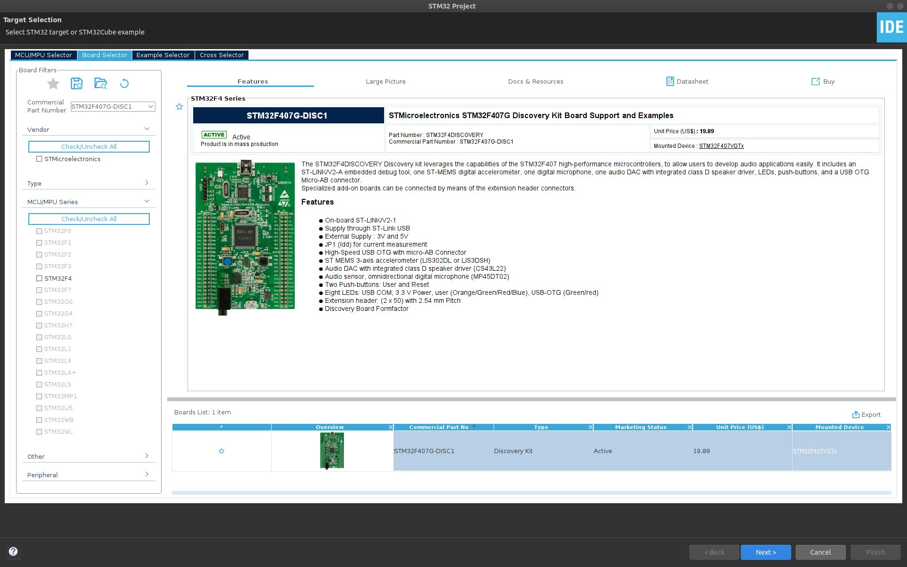
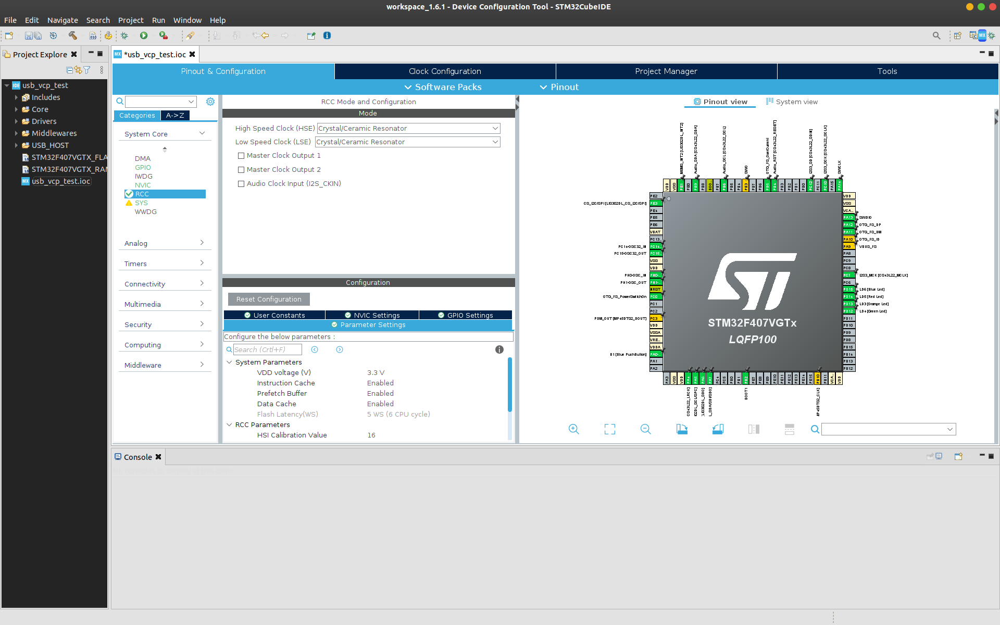
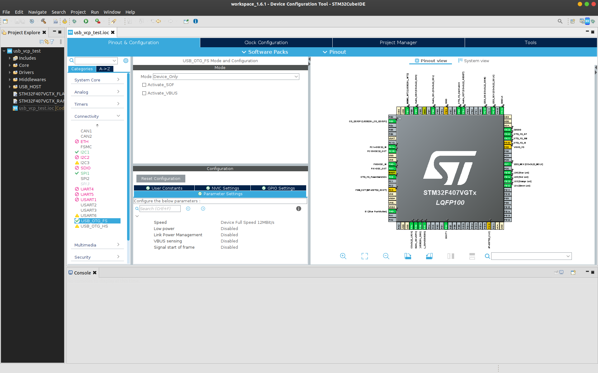

STM32: USB Virtual COM Port (VCP)
Serial communication is really useful for interfacing microcontrollers with external devices (GPS, WiFi, Bluetooth modules) or to a host PC for debugging or data transfer. For STM32 devices a USB-UART bridge can be used to communicate with a USB device such as a PC. However, many of the STM32 development boards have a USB peripheral on-board. This tutorial covers setting up the STM32F4 Discovery board as a virtual COM port (VCP) to enable USB communication to and from a PC.
I'm using the STM32 Discovery board which has an STM32F407VG microcontroller and an on-board micro USB port. I'm using the STM32 Cube Framework with the HAL libraries and USB device middleware for this application. I'm developing on a PC running Ubuntu 20.04.3.
First, open STM32CubeIDE and start a new STM32 project File > New > STM32 Project. Select your microcontroller or development board. Here I select the STM32F4 Discovery (STM32F407G-DISC1).

Click Next >, name your project (e.g. "usb_vsp_test") and leave the rest as default. We'll be using C as our programming language in this example. Click Finish, and you'll be prompted for a couple of settings:
- Yes, to "Initialize all peripherals with their default Mode?"
- Yes, to "Open this perspective now"
Now in the STM32 CubeMX configuration perspective, Under the Pinout & Configration tab in the System Core section, select RCC. Then, under RCC Mode and Configuration, enable the High Speed External (HSE) clock and select Ceramic/Crystal Resonator. Note: this may already be configured by default.

In the Connectivity section select USB_OTG_FS and confuigure the mode as Device_Only. You can also disable Activate_VBUS. On the STM32F4 Discovery pins PA11 and PA12 are configured for OTG_FS_DM and OTG_FS_DP.

Finally, under the Middleware section, select the USB_DEVICE and set the Class For FS IP as Communication Device Class (Virtual Port Com). Leave the Configuration > Parameter Settings as default.

Next, save the CubeMX (.ioc) file to generate the code. Click File > Save to save the changes to the CubeMX configuration. You’ll be asked if you want to generate code. Click Yes.
Now all the peripherals are enabled for the USB communication over VCP. But as
the HAL USB stack is heavy on the memory, the minimum heap size needed has to be
changed. This can be changed by opening the Project Manager tab and changing
the Minimum Heap Size to 0x600 under Linker Settings.

Click File > Save to save the changes to the CubeMX configuration. You’ll be asked again if you want to generate code. Click Yes.
Serial Echo
Lets test this setup with a simple echo application using the USB CDC. First
open the USB_DEVICE > App > usbd_cdc_if.c file. Find the
CDC_Receive_FS function and edit:
static int8_t CDC_Receive_FS(uint8_t* Buf, uint32_t *Len)
{
/* USER CODE BEGIN 6 */
USBD_CDC_SetRxBuffer(&hUsbDeviceFS, &Buf[0]);
USBD_CDC_ReceivePacket(&hUsbDeviceFS);
CDC_Transmit_FS(Buf, *Len);
return (USBD_OK);
/* USER CODE END 6 */
}
Note that CDC_Receive_FS is a static function so cannot be called outside
of usbd_cdc_if.c. This code takes characters from the recieve buffer and
sends them straight back out again using the CDC transmit function.
Now build the project and download the program to the board using the built in ST-Link. Click Project > Build All to build the project. Click Run > Debug As > STM32 MCU C/C++ Application. A pop-up window will appear asking you to create a new launch configuration. Note that if you are not using a Nucleo/Discovery board or an ST-LINK, you can change the hardware debugger (e.g. to a Segger J-LINK) in the Debugger tab. If you are using a Nucleo/Discovery, leave everything as default and click OK.
When connected to your host PC by the micro USB (next to the audio jack on the
STM32F4 Discovery board), the serial port should show up as /dev/ttyACM1
on most Linux distributions. Start up your favourite serial port terminal, such
as gtkterm and open ttyACM1. The baud rate doesn't matter as it's ignored
by the progam. On Ubuntu:
sudo apt-get install gtkterm
sudo gtkterm
Set the following serial port settings: the following connection details:
- Port: ttyACM1
- Baud rate: 115200 (default)
- Data bits: 8 (default)
- Parity: None (default)
- Stop bits: 1 (default)
Type a message in the serial monitor and press send. The STM32 device will echo back the message you typed!
Controlling a built-in LED using the VCP
The Virtual COM Port (VCP) opens up the possibility of remote control of the STM32. As a simple example, the built-in LED on the STM32F4 Discovery can be turned on and off using the VCP.
First, open the CubeMX (.ioc ) file again to generate the code for the LED. In
the CubeMX perspective, select the pin for the LED (which is PD13 for the orange
LED on the STMF4 Discovery board) and set as GPIO_Output. Note, if you setup
all peripherals with their default mode, this will already be done. Now save the
file to generate the code again. Next change the CDC_Receive_FS function
in USB_DEVICE > App > usbd_cdc_if.c as follows:
static int8_t CDC_Receive_FS(uint8_t* Buf, uint32_t *Len)
{
/* USER CODE BEGIN 6 */
USBD_CDC_SetRxBuffer(&hUsbDeviceFS, &Buf[0]);
USBD_CDC_ReceivePacket(&hUsbDeviceFS);
if(Buf[0] == '1')
{
HAL_GPIO_WritePin(GPIOD, GPIO_PIN_13, GPIO_PIN_SET);
}
else if(Buf[0] == '0')
{
HAL_GPIO_WritePin(GPIOD, GPIO_PIN_13, GPIO_PIN_RESET);
}
return (USBD_OK);
/* USER CODE END 6 */
}
Here we check the USB receive buffer to see if we got either 0 or 1.
If we get 1 we turn the LED on with HAL_GPIO_WritePin(). If we get
0 we turn the LED off.
Hello World!
Start with a new USB VCP project following the steps above. Open up Src >
main.c. At the top, under /* USER CODE BEGIN Includes */ , include the
USB CDC library header:
#include "usbd_cdc_if.h"
This will let us call functions from the USB CDC library in our main program.
Scroll down to our while(1) loop in main. Under
/* USER CODE BEGIN 3 */ (but still inside the while loop), enter the
following:
uint8_t msg_buffer[] = "Hello world!\r\n";
CDC_Transmit_FS(msg_buffer, sizeof(msg_buffer));
HAL_Delay(1000);
Here we create a simple message string and use the USB CDC transmit function to send the string over USB. We then wait for 1 second before repeating this action for ever!
Build and run the project as before. Open the serial connection, and you should be greeted by that oh-so-familiar phrase, repeating over and over again: